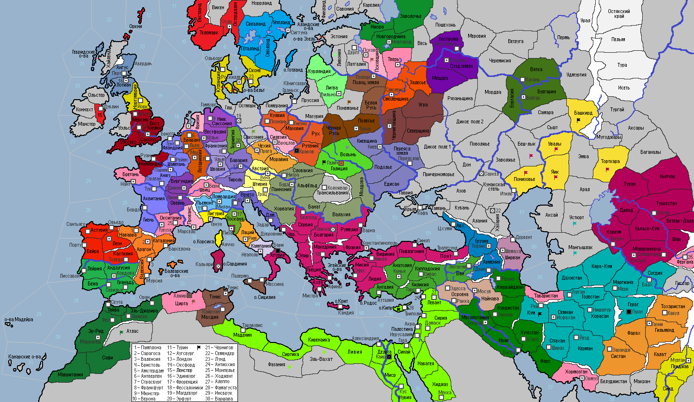

<== | 1 | | 2 | | 3 | | 4 | | 5 | | 6 | | 7 | | 8 | | 9 | | 10 | | 11 | ==>
Первая междоусобица на Руси
После смерти в 1020 г. Великого князя Киевского Ярослава Старого русские князья, правившие в удельных княжествах, начали вести ожесточенную борьбу за передел своих владений. [Все русские фракции имеют КБ друг на друга 30 лет (6 ходов)]
· Новым базилевсом Византийской империи стал Фотий Палеолог, сменивший скоропостижно скончавшегося Андроника Исавра. Палеологи стали третьей династией на троне империи за последние 15 лет. Православная церковь вводит обязательное соблюдение поста всеми верующими. Подавлен мятеж рабов в Пафлагонии. · Туровский князь Святополк I возвращается к вере предков и вводит в обиход славянское язычество в своей стране. Поход в земли Понеманья завершается победой туровской дружины. · Датчане вновь грабят южное побережье Кордовского шейхства. · Восстания рабов в Фатимидском султанате: захвачена столица страны и о.Кипр! · В Европе стали модными анекдоты про короля Франции Гийема II Славного. · Хараджитов г.Фес на центральной площади города забросали камнями и побили палками, после чего они вместе с остальными суннитами города пошли на пятничную молитву. Шейх Кордовы призвал альморавидов о помощи в отражении агрессии католиков, что послужило причиной заключения между странами военного союза в 1025 г. Армия Салих-шаха вторгается в Атласские горы и изгоняет оттуда берберские племена. · Землетрясение в Азербайджане! «Трясет» в социально-религиозном смысле и всю страну: огузы начинают ругаться с курдами, шииты с суннитами, персы и сирийцы проклинают евреев, алавиты и исмаилиты подливают масла в огонь, и только зороастрийцы молятся своему всеми забытому Богу. · Ольга, по причине отсутствия у почившего отца братьев, вынуждена возглавить Черниговское княжество. Черниговцы разбивают пришлых кочевников и освобождают Северщину. · Король Арагона Анцо Бесчестный сел писать мемуары, но тягостные воспоминания о предательстве кастильского союзника и вероломстве Папы Иоанна V вызвали у него сердечный приступ, от которого он и умер. Трон занял старший сын покойного Санчо I Безбожник. · Хосам принял власть в государстве Хормозган. · Народно-освободительное движение поднимается в Галиции, оккупированной поляками! · Новым половецким ханом стал Оселук. Восстание рабов в Башкирде! · Малолетний Бертран I надел на себя цепь герцога Бургундии. · Зириды берут штурмом г.Алжир и устанавливают полный контроль над вражеской страной. · Огузы начинают обосновываться в г.Эрзерум. · Мани – новый бей Ширвана. Войска страны предприняли неудачный поход в степи Хазарии. · Эстонцы атакуют Ливонию, удерживаемую литовцами, но проигрывают сражение и отступают. · Коронация Володимера I Хитрого вызвала недовольство шляхты, которая поднимает бунт против неугодного им монарха! · Караханидский правитель Тобга-хан сначала разбивает половцев в провинции Яик, затем завершает дело в Понизовье, разбив последние силы половцев. Однако, местные мурзы поднимают вооруженный мятеж против захватчиков, который, впрочем, успешно подавляется наёмниками Тобга-хана. Разбив своего врага, Тобга-хан, не останавливается на достигнутом и следует в провинцию Беш-лык, где разбивает местные вольные кланы кочевников. · Князь Полоцкий Мстислав Меченый умирает. Оправдывая своё имя, он мстит нелюбимым детям, нарочно не оставляя завещания… Междоусобица на Руси началась с полочан, которые решило прибрать к рукам слабое Псковское княжество. В 1025 году полоцкое войско вторглось в пределы Псковщины. · Архиепископ Эрих теряет жену, умершую при родах. «Чем не повод для праздника?» - решил правитель Вестфалии и дал соответствующие распоряжения. Войска Вестфалии атаковали славян Остмарка, но потерпели поражение. · Умирает король Норвегии Стейн I… · Забава, дочь покойного правителя Твери, возглавила княжество. · Рудольф I продолжил династию Вельфов на баварском троне. · Альберто Чельси избран новым дожем Венецианской республики. · Англичане атакуют пиратов под бретонским флагом в Ла-Ман · Мормэр. сына покойного герцога Майкла-Колума I провозглашен новым герцогом Шотландии. · Музаффар – новый правитель Ферганы. · Принц Эмунд так и не дождавшись решения ландтага, умирает. Королем Швеции становится его младший брат Кнут I Большая голова. · Основаны новые города: Ярославль (Суздальское кн.), Тверь (Тверское кн.), Монпелье (Тулуза), Амстердам (Фризия), Вильно (Литва)